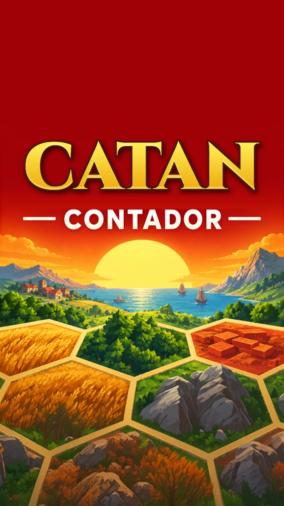

Gira el móvil
El contador se usa en vertical

CONTADOR
Toca para empezar
Contador de Catan
Desbloquear
Comprar clave
Probar gratis
Contador de Catan
Puntos de victoria
Jugadores
Escenario
−
PV para ganar
+
Expansiones y variantes
Terminar partida
Nueva partida